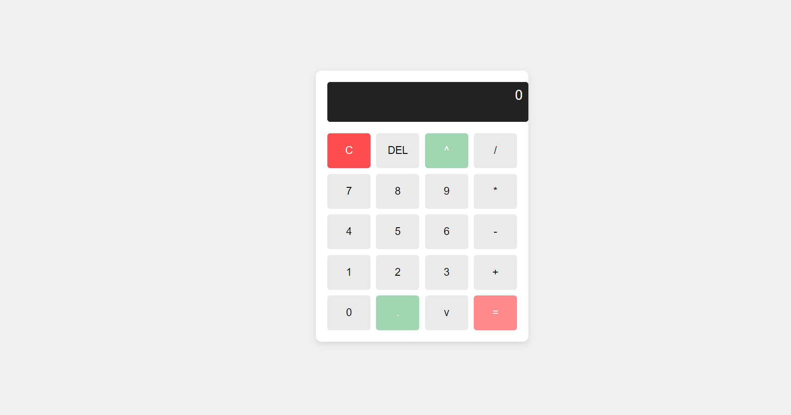
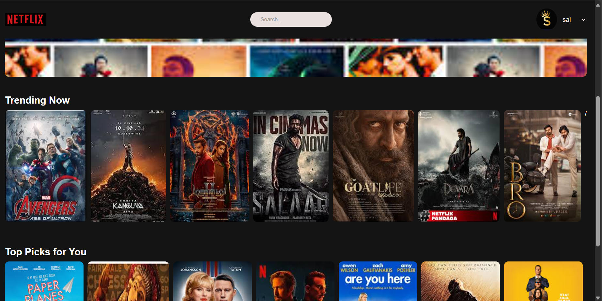
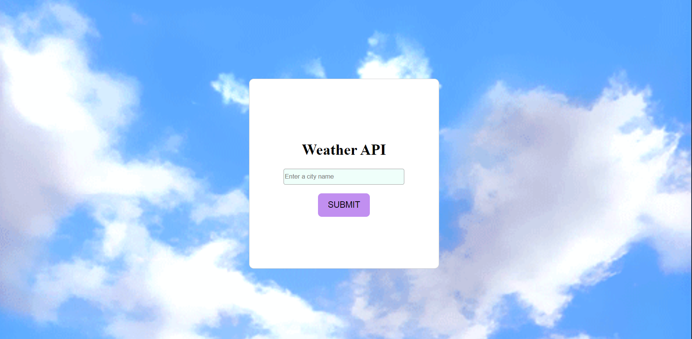

My Projects:
1.Calculate:
The simple calculator app, likely a beginner project. The interface is clean with a basiclayout. The calculator appears functional with buttons for numbers,
operators, and a display area. It's a good example of a fundamental web development project, demonstrating basic HTML, CSS, and potentially JavaScript for
interactivity.

Calculate Project1
2.Netfilx:
The Netflix-like interface. It displays a row of movie or TV show thumbnails, possibly representing trending or recommended content. The layout and design
elements like the search bar and "Top Picks for You" section, mimic the popular streaming platform's user interface. This project likely demonstrates front-
end webdevelopment skills, including HTML, CSS, and potentially JavaScript for dynamic elements and user interactions. It is only design the front in netfilx.

Netfilx Project2
3.Weather:
The weather application. The application has a login screen with fields for username and password, and a button to submit the login information. The background
of the page is a blue sky with white clouds. The application is likely built using HTML, CSS, and JavaScript.

Weather Project3